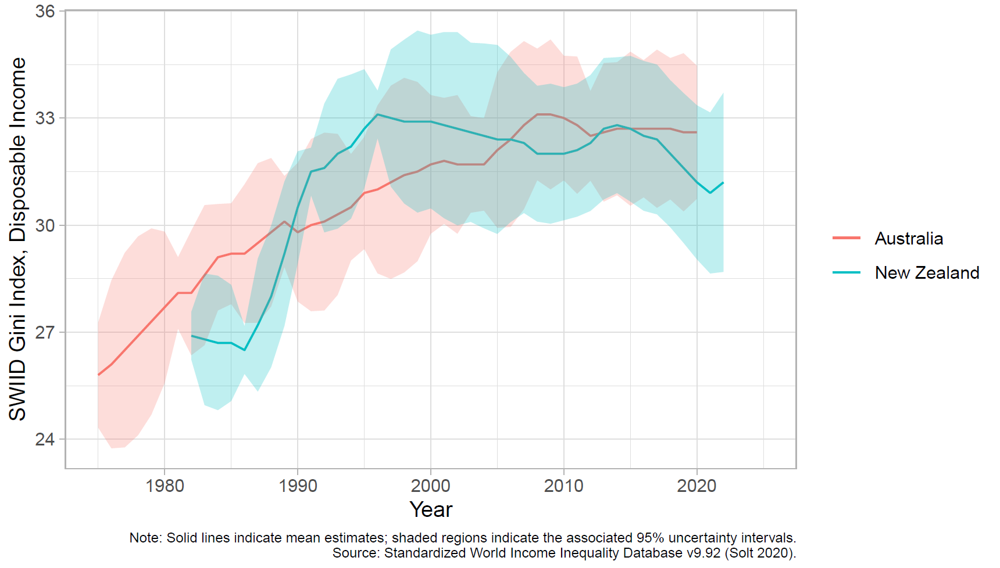
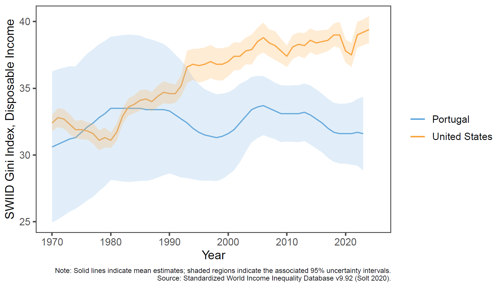
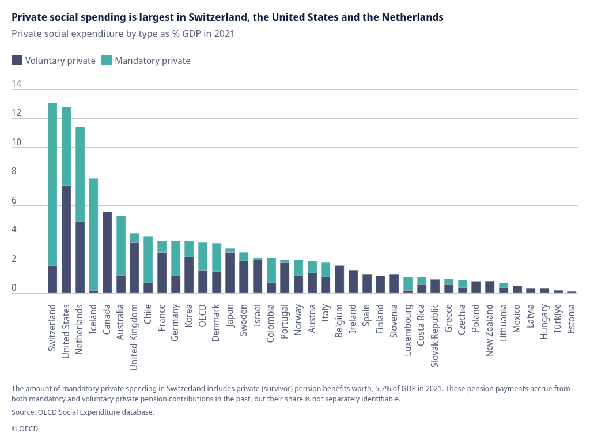
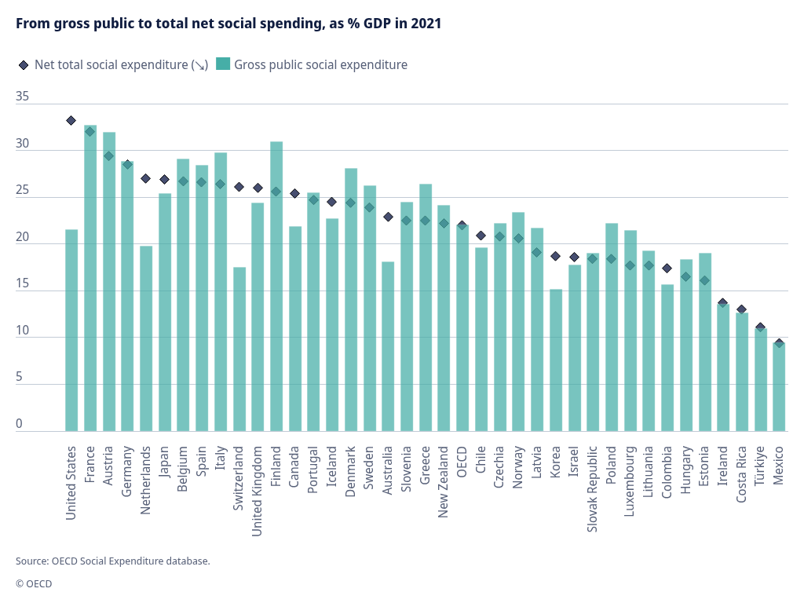

Seminario de Análisis Comparado de Políticas Sociales 2027-1
Especialización en Desarrollo Social - Facultad de Economía, UNAM
Daniel Pliego Alcántara
Marvin Ivan Trejo Mendez
[Uso de IA: Diseño de lámina con Gemini]
Contenido de la presentación
1. ¿Quiénes son los países angloparlantes?
2. El modelo liberal de Esping-Andersen
3. Críticas y matices al régimen liberal
4. Diferentes perspectivas de análisis
5. Familia de naciones y comparación institucional
6. English awfulness reconsidered
5. Los casos de Australia y Nueva Zelanda
7. Alta progresividad y paradoja redistributiva
8. El caso de EEUU y sus matices
9. Respuestas a la crisis financiera de 2008
10. Respuestas a la pandemia de Covid 2020
11. ¿Cambios en el régimen de bienestar?
12. El Estado de bienestar temporal
12. Referencias
[Uso de IA: Diseño de lámina con Gemini]
¿Quiénes son los países angloparlantes?
La palabra angloparlante es un término compuesto formado por la unión de dos elementos que provienen del latín.
Anglo
Anglo: proviene del latín angli, que era el nombre de los anglos, una tribu germánica procedente de la península de la actual Dinamarca y Alemania que se asentó en las islas británicas durante el siglo V.
Parlante
Parlante: proviene del verbo parlar, que significa hablar o charlar, derivado del latín tardío parabolare que refiere a hablar, usar parábolas o palabras.
Países analizados por Castles & Pierson
El inglés es el idioma oficial o principal, utilizado en el gobierno, la educación, los medios de comunicación y la vida diaria. Estos países comparten elementos culturales e históricos vinculados con el idioma.
[Uso de IA: Diseño de lámina con Gemini]
El modelo liberal de Esping-Andersen
En su concepción original sobre los regímenes de Estado de bienestar, Esping-Andersen propuso el régimen liberal como uno de los tres grandes modelos de Estado de bienestar.
Desmercantilización
El grado en que una persona puede vivir dignamente sin depender exclusivamente de vender su fuerza de trabajo en el mercado. En el modelo liberal la desmercantilización es muy baja. El sistema estimula que las personas consigan sus ingresos, salud y pensiones a través del mercado de trabajo. El bienestar estatal es de último recurso.
Estratificación social
Refiere al impacto que tiene la política pública en las clases sociales y en la igualdad. En el modelo liberal se fomenta una dualidad de clases: los sectores de ingresos medios/altos que adquieren seguros privados (pensiones, salud privada) y los sectores vulnerables, supeditados a la beneficencia pública con subsidios bajos.
Triángulo de bienestar
Refiere a la distribución del bienestar entre el Estado, el mercado y la familia. En el modelo liberal hay una preferencia clara por el mercado. El Estado solo interviene cuando el mercado o la familia fallan.
Características principales
Comprobación de medios
Los subsidios sociales se dirigen a quienes demuestran estar debajo del umbral de pobreza.
Defensa de la ética del trabajo
Los subsidios se diseñan para ser deliberadamente modestos o bajos, de modo que no desincentiven la búsqueda de empleo.
Fomento de soluciones privadas
El Estado otorga incentivos fiscales o subsidios indirectos para que las empresas e individuos contraten planes privados de salud o planes de pensiones privados.
[Uso de IA: Diseño de lámina con Gemini]
Críticas y matices al régimen liberal
La inclusión del Reino Unido en este régimen se debió a un error matemático en el índice de desmercantilización
(Scruggs y Allan, 2006)
Dentro del mundo angloparlante existen dos modelos: el radical, centrado en la redistribución, y el liberal en términos de Esping-Andersen
(Castells y Mitchell, 1993).
Al hacer un análisis de clusters sobre la asistencia social, el grupo angloparlante se divide en tres grupos distintos
(Gough, 2001)
[Uso de IA: Diseño de lámina con Gemini]
Diferentes perspectivas de análisis
No existe una única manera de analizar los Estados de bienestar. La propuesta de Esping-Andersen es un referente. Las similitudes y diferencias entre países dependen de la perspectiva con que se observen.
Visto desde lejos, se observan solo grandes rasgos; a distancia media, se pueden distinguir regímenes o "familias de naciones"; y con un enfoque de gran acercamiento, cada país aparece como un caso único e incomparable.
Cuidados
Al analizar los servicios de cuidados, Reino Unido e Irlanda se ubican en una posición intermedia entre el modelo escandinavo y el continental.
Género
En Reino Unido e Irlanda, el movimiento feminista fue más fuerte que en el continente a pesar de ser Estados de “proveedor masculino fuerte” (strong male breadwinner). Por su parte, Canadá, Australia y EEUU desarrollaron políticas más avanzadas contra la violencia de género que los países escandinavos.
[Uso de IA: Diseño de lámina con Gemini]
Familia de naciones
No basta con mirar solo la economía o la lucha de clases. Los países comparten lazos históricos, geográficos, lingüísticos y culturales que hacen que adopten patrones de políticas públicas muy similares entre sí.
Castles y Pierson introducen la idea de “familia de naciones” basado en la premisa de que los países comparten historia, idioma, cultura, instituciones y experiencias políticas que permiten entender que desarrollen políticas públicas parecidas.
[Uso de IA: Diseño de lámina con Gemini]
Comparación entre regímenes de Estados de bienestar y familias de naciones
Aspecto
Esping-Andersen: Regímenes de bienestar
Castles y Pierson: Familia de naciones
Pregunta principal
¿Cómo está organizado el Estado de bienestar?
¿Por qué ciertos países desarrollan políticas e instituciones parecidas?
Principal enfoque
Institucional y político
Histórico, cultural y territorial
¿Qué analiza?
Relación entre Estado, mercado y familia
Los elementos históricos, culturales, lingüísticos y geográficos compartidos
Conceptos importantes
Desmercantilización
Historia compartida
Clasificación
Liberal, conservador y socialdemócrata
Agrupa países que comparten una determinada tradición nacional o histórica
Papel del mercado
Es fundamental para diferenciar los regímenes. En el régimen liberal tiene un papel especialmente importante
Se observa como parte de los patrones comunes entre países, pero no es el único elemento
Papel del Estado
Analiza qué tan amplio es el Estado de bienestar y cómo proporciona protección social
Analiza cómo las tradiciones nacionales pueden influir en las políticas que desarrolla el Estado
Ejemplo
Estados Unidos suele asociarse con el régimen liberal
Estados Unidos, Reino Unido, Canadá, Australia, Nueva Zelanda e Irlanda pueden analizarse como una familia de países de habla inglesa
¿Todos los países del grupo son iguales?
No. Un mismo régimen puede presentar diferencias entre países
No. Compartir una familia no significa tener las mismas instituciones o políticas.
Objetivo
Identificar tipos de Estados de bienestar
Explicar similitudes y diferencias entre países a partir de su trayectoria histórica y cultural
[Uso de IA: Diseño de lámina con Gemini]
English awfulness reconsidered
La tesis de la “deficiencia” en la política social de los países angloparlantes solo se sostiene cuando únicamente se mide el volumen bruto de gasto público y transferencias.
Existen otros instrumentos para combatir la desigualdad
La estrategia de los países angloparlantes se ha basado en la progresividad fiscal, la focalización de beneficios (means-testing) y medidas directas en el mercado laboral.
Por ejemplo, en Australia y Nueva Zelanda los tribunales de arbitraje jugaron un papel importante fijando un salario digno o vital obligatorio para cubrir las necesidades del trabajador y su familia, reduciendo la necesidad inicial de transferencias estatales.
El desmantelamiento del sistema de arbitraje durante la era neoliberal se asocia con un aumento en la desigualdad en estos países.
[Uso de IA: Diseño de lámina con Gemini]
Los casos de Australia y Nueva Zelanda
¿Cuál es el problema que intenta resolver un Estado de bienestar?
Opción A
"Te doy una prestación social para complementar tus ingresos." Transferencias sociales
Opción B
"Intento que tu salario sea suficientemente alto desde el principio." Mercado laboral
“wage-earners’ welfare state” = Estado de bienestar basado en los trabajadores asalariados.
↓
Regulación salarial → mejores ingresos laborales → menor necesidad de transferencias sociales
↓
Parte de la protección social se conseguía a través del salario.
↓
Modelo liberal: “El Estado gasta poco y deja que el mercado proporcione buena parte del bienestar.”
Castles y Pierson dicen que no todos los países de habla inglesa deben entenderse exactamente de la misma manera.

[Uso de IA: Diseño de lámina con Gemini]
Alta progresividad y la paradoja redistributiva
Los países angloparlantes concentran sus prestaciones en quienes más lo necesitan y aplican impuestos a la renta altamente progresivos.
El sistema fiscal de EEUU es el más progresivo de la OCDE debido al crédito fiscal por ingreso del trabajo (EITC).
La capacidad efectiva del sistema fiscal y de transferencias de reducir la desigualdad en Australia o Irlanda es comparable con la de Suecia o Dinamarca, y la de Reino Unido es similar a la de Alemania.
Las mayores tasas de desigualdad en estos países se asocian con la elevada desigualdad que genera la desregulación de su mercado laboral.
[Uso de IA: Diseño de lámina con Gemini]
El caso de EEUU
En comparación con los países de la OCDE, EEUU presenta:
Gasto público social bruto más bajo
Niveles más altos de desigualdad de ingresos
Menor carga fiscal sobre beneficios
Nivel más alto de gasto social privado
Algunos matices
Portugal registra mayor desigualdad, medida por el índice de Gini, que EEUU.

Países Bajos es el segundo país con mayor gasto social privado.

Alemania y EEUU comparten niveles elevados de pobreza infantil.
EEUU
18.5%
Alemania
16.8%
Promedio OCDE
12.0%
Al medir el gasto social neto total, EEUU se ubica en el sexto lugar más alto de la OCDE.

[Uso de IA: Diseño de lámina con Gemini]
Respuestas a la crisis financiera de 2008
La recesión de 2008 provocó mayor necesidad de mecanismos y políticas que vieran por el bienestar social, a la par que los países se enfrentaban a menores ingresos fiscales.
No en todos los países hubo un recorte automático en el presupuesto social
Respuestas nacionales
EEUU implementó en 2010 el Obamacare (Patient Protection and Affordable Care Act) lo que significó un cambio significativo en su sistema de salud.
Reino Unido implementó severos recortes, endureció la condicionalidad laboral y observó un incremento en la pobreza infantil.
Nueva Zelanda, Australia y Canadá enfocaron sus reformas en reducir la dependencia de los subsidios e imponer como condición la búsqueda de empleo
[Uso de IA: Búsqueda de fuentes y resumen de información con Gemini Notebook; Diseño de lámina con Gemini]
Respuestas a la pandemia de Covid 2020
Durante la pandemia de COVID-19, los países angloparlantes implementaron mecanismos de retención del empleo (wage subsidies) y esquemas de ingreso de emergencia para desempleados y trabajadores independientes. Selecciona un país para ver las medidas específicas:
Coronavirus Job Retention Scheme (CJRS / furlough): El Estado reembolsó el 80% de los salarios brutos de los trabajadores suspendidos (hasta un tope de £2,500 mensuales) para mantener el vínculo laboral con sus empresas.
Universal Credit (UC): Se incrementó temporalmente el pago estándar del beneficio por desempleo en £20 semanales (£94/semana), se ajustó la ayuda para vivienda (Local Housing Allowance) y se congelaron los requisitos de búsqueda activa de empleo y sanciones (work-first).
Self-Employment Income Support Scheme (SEISS): Cobertura salarial de entre el 70% y 80% para trabajadores autónomos e independientes.
JobKeeper: Un subsidio salarial pagado a través de los empleadores para preservar los puestos de trabajo en empresas con pérdidas de facturación.
JobSeeker (COVID Supplement): Se duplicó temporalmente la prestación por desempleo mediante el pago de un suplemento de emergencia.
Servicios básicos: Se brindó temporalmente cuidado infantil gratuito y se financiaron alojamientos de emergencia para personas sin hogar.
Canada Emergency Response Benefit (CERB): Un subsidio directo de $2,000 CAD mensuales dirigido a cualquier persona mayor de 15 años que hubiera perdido ingresos por la pandemia.
Flexibilización de requisitos: Reemplazó temporalmente las restricciones del seguro de desempleo tradicional (Employment Insurance), alcanzando a trabajadores temporales, estudiantes y autónomos.
Pagos directos de estímulo (Stimulus checks): Transferencias monetarias directas a la gran mayoría de hogares y residentes.
CARES Act / Seguro de desempleo ampliado: Se añadió un suplemento de $600 dólares semanales a los beneficios estatales de desempleo y se extendió la protección a gig workers (trabajadores independientes que realizan tareas a corto plazo, proyectos o servicios bajo demanda), autónomos y contratistas independientes.
Programas de nómina y moratorias: Apoyo a pequeñas empresas (Paycheck Protection Program) y moratorias federales sobre ejecuciones hipotecarias y desalojos.
[Uso de IA: Búsqueda de fuentes y resumen de información con Gemini Notebook; Diseño de lámina con Gemini]
¿Cambios en el régimen de bienestar?
Recordemos que en la clasificación de Esping-Andersen, el régimen liberal se caracteriza por:
Una baja desmercantilización (beneficios monetarios bajos, de cuota fija o residuales).
Una alta focalización (means-testing) dirigida únicamente a los más pobres, generando estigmatización social.
Un enfoque de activación (work-first) para forzar a las personas a aceptar empleos en el mercado, manteniendo la primacía de la oferta y la demanda sin mayor intervención estatal.
Las intervenciones durante la pandemia modificaron algunas de estas premisas, marcando diferencias respecto a la concepción tradicional:
Mayor desmercantilización
La tasa de reemplazo es una de las variables utilizadas por la literatura posterior a Esping-Andersen para calcular y operacionalizar la desmercantilización.
La tasa de reemplazo (replacement rate) mide el porcentaje del salario habitual que una prestación pública reemplaza cuando el trabajador pierde sus ingresos por algún riesgo social, por ejemplo: desempleo, enfermedad, maternidad o jubilación.
En el modelo clásico, las prestaciones son intencionalmente reducidas para no desincentivar la búsqueda de empleo.
Durante la pandemia, países como el Reino Unido, Canadá y EE. UU. garantizaron tasas de reemplazo salarial del 70% al 80% e incluso superiores al 100% previo en los sectores de salarios más bajos.
Ruptura de la focalización (means-testing)
El régimen liberal tradicional condiciona el acceso a beneficios mediante comprobaciones de ingresos.
Programas como el CERB en Canadá y los cheques de estímulo en EE. UU. prescindieron de las pruebas de medios y de los registros históricos de cotización.
La ayuda se expandió hacia las clases medias y trabajadores atípicos (gig workers, autónomos, contratistas), diluyendo la dualidad tradicional entre "quienes pagan impuestos" y "quienes reciben asistencia".
Suspensión de la condicionalidad y Retención del empleo
Normalmente, el régimen liberal exige una búsqueda activa de empleo bajo amenaza de sanciones o pérdida del beneficio. Durante la pandemia, los gobiernos suspendieron la condicionalidad laboral y retiraron las exigencias de welfare-to-work.
Típicamente, los mercados laborales de corte liberal responden a las crisis mediante mecanismos de ajuste de mercado como despidos rápidos y ajuste salarial. En 2020, gobiernos como el Reino Unido y Australia asumieron un papel de "empleadores de última instancia", cubriendo el costo salarial de las empresas privadas mediante esquemas de retención de empleo (furlough / JobKeeper) para evitar despidos.
[Uso de IA: Búsqueda de fuentes y resumen de información con Gemini Notebook; Diseño de lámina con Gemini]
El Estado de bienestar temporal
A pesar de que las medidas descritas indican un cambio de régimen liberal a algo similar al modelo socialdemócrata, la literatura destaca que no se trata de un cambio de paradigma sino de una política para los mercados o de emergencia:
Diseño explícito con cláusulas de caducidad: Las transferencias y subsidios se concibieron desde el inicio como medidas destinadas a caducar una vez reabierta la economía.
Protección de la liquidez macroeconómica: Más que un compromiso con la redistribución a largo plazo, el gasto público a través de estas medidas buscó proteger el sistema de crédito y evitar el impago de alquileres e hipotecas por parte de las familias.
Retorno al status quo: Una vez superada la fase aguda de la crisis sanitaria, la mayoría de los países anglosajones desmontaron los beneficios extraordinarios, reinstauraron las reglas de condicionalidad laboral y reorientaron el debate hacia la austeridad fiscal y la reducción de la deuda pública.
[Uso de IA: Diseño de lámina con Gemini]
Referencias
Bibliografía
Castles, F. G., & Pierson, C. (2021). The english-speaking countries. En D. Béland, S. Leibfried, K. J. Morgan, H. Obinger, & C. Pierson (Eds.), The Oxford Handbook of the Welfare State (2.a ed., pp. 863-880). Oxford University Press.
Fuentes consultadas para investigación COVID
Dai, J. (2026). The impact of high-benefit policies on the Canadian labor market during the COVID-19 pandemic. En A. J. Moshayedi (Ed.), Proceedings of the 2025 International Conference on Hybrid Commerce, Human Capital, and Economic Dynamics (ICHCH 2025) (Advances in Economics, Business and Management Research 374, pp. 710–717). Atlantis Press.
Ebbinghaus, B., & Lehner, L. (2022). Cui bono – business or labour? Job retention policies during the COVID-19 pandemic in Europe. Transfer: European Review of Labour and Research, 28(1), 47–64. https://doi.org/10.1177/10242589221079151
Heins, E., & Dukelow, F. (2022). Liberal welfare states. En B. Greve (Ed.), De Gruyter Handbook of Contemporary Welfare States (pp. 85–100). De Gruyter. https://doi.org/10.1515/9783110721768-006
Hick, R., & Murphy, M. P. (2021). Common shock, different paths? Comparing social policy responses to COVID-19 in the UK and Ireland. Social Policy & Administration, 55(2), 312–325. https://doi.org/10.1111/spol.12677
Mäntyneva, P., Ketonen, E.-L., & Hiilamo, H. (2023). Path dependence or steps for major reforms? Pandemic-related social protection measures in ten OECD countries. Journal of International and Comparative Social Policy, 39(1), 13–27. https://doi.org/10.1017/ics.2023.1
PubMed Central. (s. f.). COVID-19 amongst western democracies: A welfare state analysis. National Center for Biotechnology Information. https://pubmed.ncbi.nlm.nih.gov/35492957/
Spies-Butcher, B. (2020). The temporary welfare state: The political economy of JobKeeper, JobSeeker and "Snap Back". Journal of Australian Political Economy, (85), 155–163.
Taylor & Francis Group. (s. f.). The Covid-19 pandemic economic impacts and government responses across welfare regimes. Taylor & Francis Online. https://www.tandfonline.com/
University of Helsinki Library. (s. f.). Instituting provision of benefits for families with children due to coronacrisis. Universidad de Helsinki. https://helda.helsinki.fi/
Zimmerman, L. (2025, 28 de agosto). Understanding shocks to welfare systems. MIT News, Massachusetts Institute of Technology. https://news.mit.edu/2025/understanding-shocks-to-welfare-systems-0828